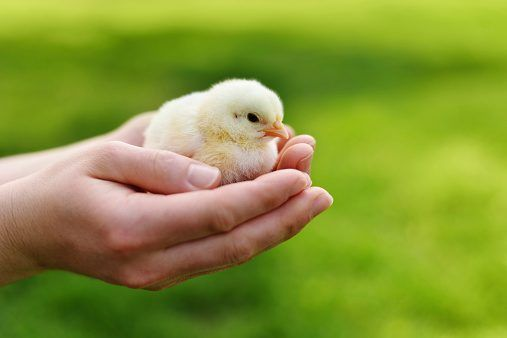
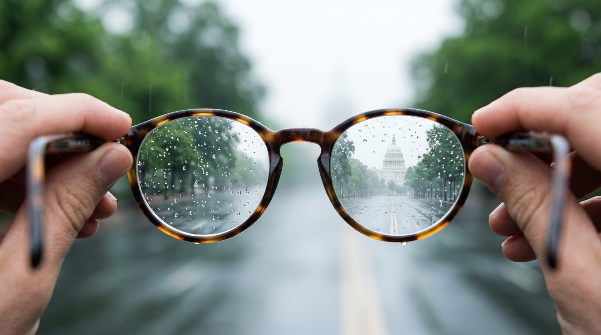
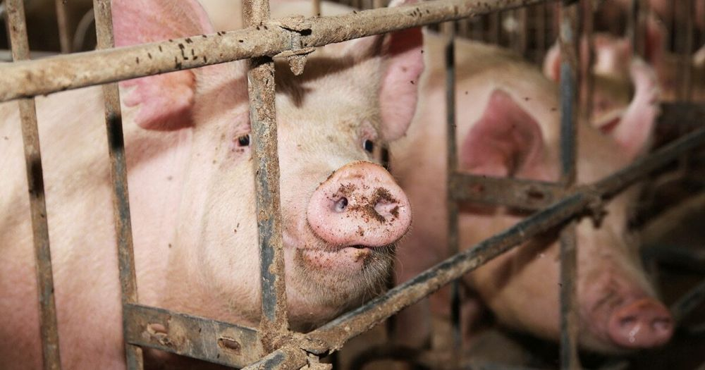

Patriot Animal Defense
A country where defending animals is a common-sense cause rooted in stewardship and personal responsibility, and where conservatives and libertarians are empowered to act on it from campus quads to state capitols.
Why it matters
Defending animals follows from values conservatives already hold.
Our principles

Defending the creatures of the Earth.
We are entrusted with the animals in our care. Defending them means refusing to inflict needless harm.

No industry gets a free pass.
No industry should get bailouts or advantages that others don't. Taxpayers deserve transparency about where their money goes.

Your choices carry weight.
Where your money goes shapes what gets built, and our choices as individuals add up. We believe in knowing what you're funding.
No handouts, no bans.
The government shouldn't prop up one industry while blocking its competitors. A rigged game is not fair competition.
Patriot Animal Defense is building a strong conservative presence in the animal defense movement. We advocate for animals by opposing government policies that strip them of their natural-born freedoms to life, liberty, and the pursuit of happiness.
Isaac DeBlasio, Executive Director, graduated from the University of Wisconsin-Madison in 2025, where he was active in Students For Liberty and served as President of Animal Advocacy UW. He is a published writer on animal policy, with work in The Hill and other outlets. He is driven by the belief that we are stewards of the animals in our care.
We take the conversation about animal policy directly to conservatives. We travel to college campuses to discuss the national security issues tied to animal policy, building connections with students along the way. At conservative conferences, we bring animal policy to the forefront of the conservative movement.
To write: one line about the fellowship (Isaac)